Grafana Guide: Transformations and Expressions
|
This content was generated with the assistance of AI and should be verified against the official documentation before being relied on in production. |
Checked on 2026-11-11 against Grafana 13.3.x.
What you build
You add two panels to the dashboard Bookshelf (guides). The first one, a table called Route summary, runs two Prometheus queries, the request rate and the p95 latency of every route, and a chain of transformations joins the results, renames the columns, adds a rate per minute, drops the quiet routes, groups the rows and reduces them to a single summary row. The second one, a time series called Requests per minute, uses expressions to multiply a query by 60, to reduce it to a number and to run a SQL statement on it.
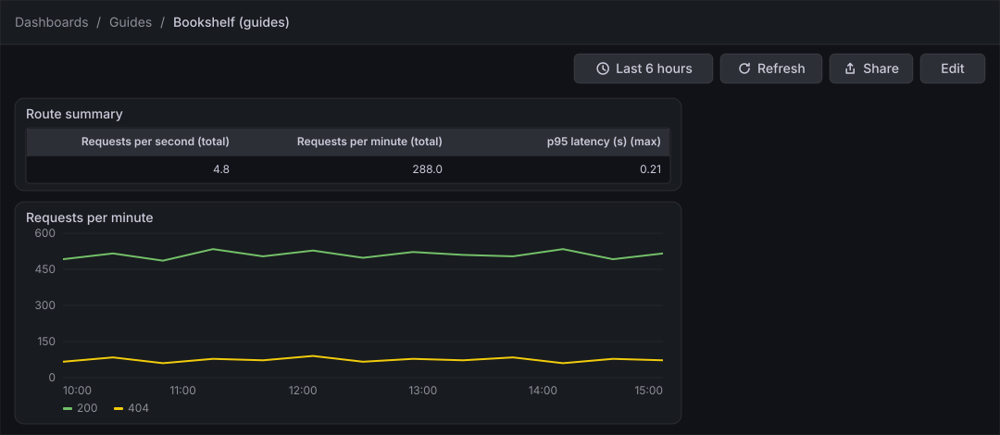
Before you start
-
Start the Grafana profile of the hands-on lab and wait about a minute:
cd lab docker compose --profile grafana up -d -
Open http://localhost:3000, sign in as
adminwith the passwordadmin, and click Skip when Grafana 13.3 asks you to update the default password. -
Do the earlier guides in this series, at least Create a dashboard and the first panel, which creates the dashboard Bookshelf (guides) in the folder Guides, and Tables, which builds a first table.
-
The data source Prometheus is provisioned by the lab and is the default data source. The load generator runs in its default mode and gives the queries traffic to draw. SQL expressions are available in the free Grafana 13.3 image.
-
The guide was checked on Grafana Enterprise 13.3.0 (the free image, no licence key). Editing dashboards needs the Editor or Admin role of the organization;
adminhas it. -
The figures are drawings of the Grafana 13.3 user interface, not screenshots, so small details can differ from your screen. A highlighted box with a number marks the control of the step with the same number.
Steps
A transformation changes the data after the data source returned it and before the visualization draws it; an expression is calculated on the server from the results of queries. Both live in the panel editor: transformations under the bottom tab Transformations, expressions under the button Expression below the queries. The settings of each transformation card are drawn from the names Grafana gives them; if a label differs on your screen, pick the closest entry.
The screen maps of the dashboard in edit mode and of the panel editor are in the guide Create a dashboard and the first panel; come back to them when a control is not where a figure shows it.
Add a table panel with two queries
-
In the left navigation, click Dashboards, then open the folder Guides and the dashboard Bookshelf (guides).
-
Click Edit.
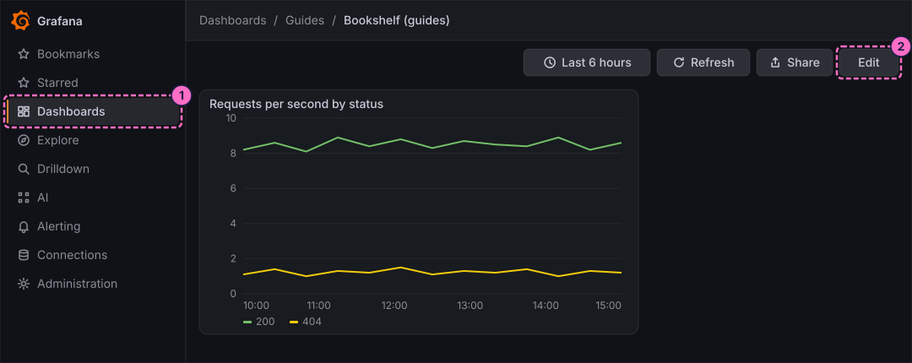
-
Click Add in the toolbar.
-
In the Add pane of the right sidebar, click the Panel tile.
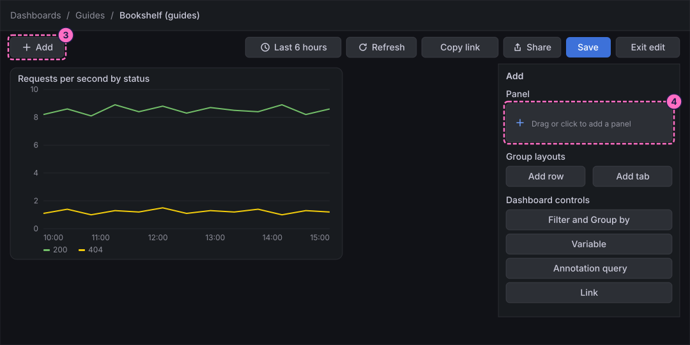
-
In the Panel pane that replaces the Add pane, click Edit visualization.
-
At the bottom of the panel editor, check that Data source shows Prometheus. In query A, click Code in the Builder / Code switch.
-
Click inside the query editor first, so that it has the focus, then type the request rate by route:
sum by (uri) (rate(http_server_requests_seconds_count{application="bookshelf"}[1m])) -
Open the Options line of query A and set Format to Table.
-
In the same line, set Type to Instant.
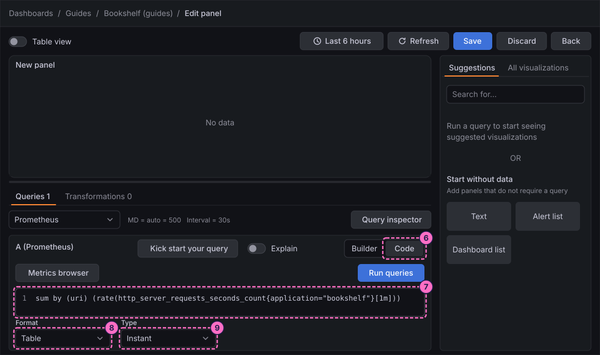
-
Click Add query.
-
In query B, click Code.
-
Click inside the editor of query B and type the p95 latency by route on one line (the editor may wrap it):
histogram_quantile(0.95, sum by (le, uri) (rate(http_server_requests_seconds_bucket{application="bookshelf"}[5m]))) -
In the Options line of query B, set Format to Table.
-
Set Type to Instant.
-
Click Run queries.
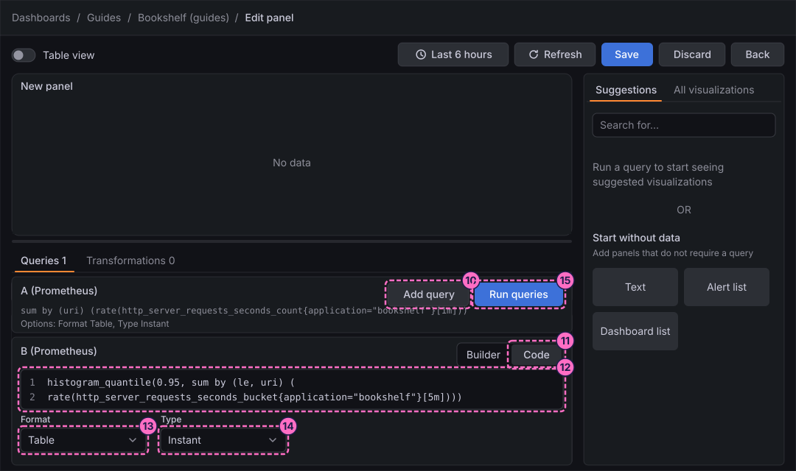
-
In the right column, click the All visualizations tab.
-
Click Table ("Supports many column styles").
-
In the options pane, under Panel options, type
Route summaryin Title.
Join the queries and tidy the columns
-
At the bottom of the editor, click the Transformations tab.
-
Click Add transformation.
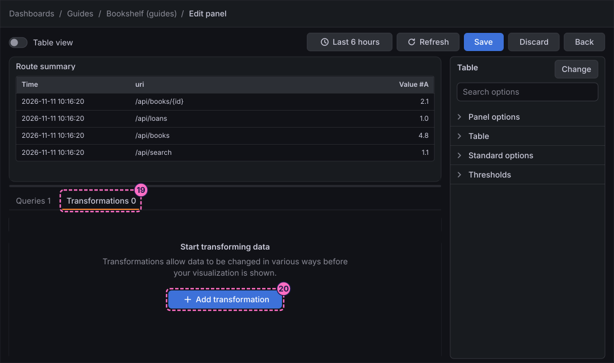
-
In the Add another transformation drawer, click Join by field.
-
In the card, choose
urias the field to join by. The table now holds one row per route with the two value columns, named after their queries,Value #Afor the rate andValue #Bfor the latency.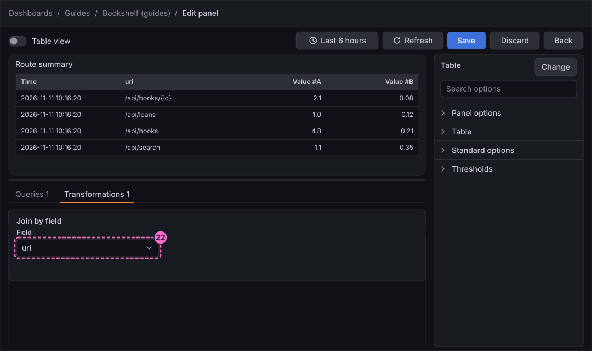
-
Below the card, click the button that adds another transformation and choose Organize fields by name.
-
Switch off every Time field, so that the time columns disappear.
-
Type
Routeas the new name ofuri. -
Type
Requests per secondas the new name ofValue #A. -
Type
p95 latency (s)as the new name ofValue #B.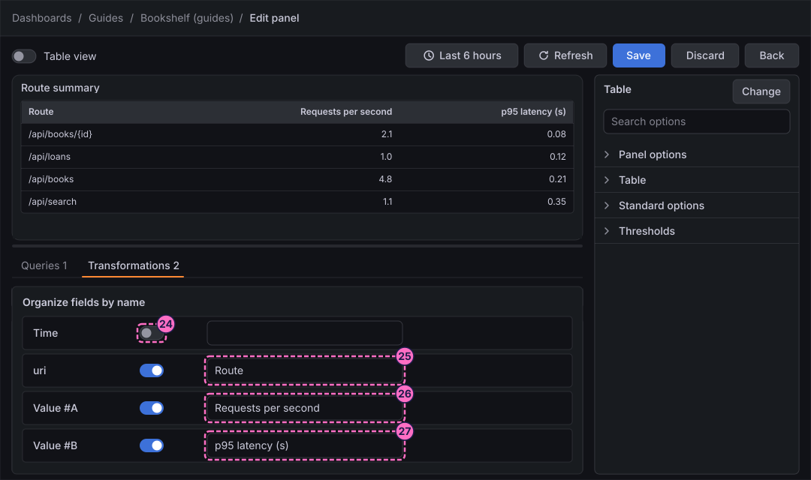
Calculate, filter and debug
-
Add the transformation Add field from calculation.
-
Set Mode to the binary operation.
-
Build the operation
Requests per second*60: choose the fieldRequests per second, the operator*and type60. -
Type
Requests per minutein Alias.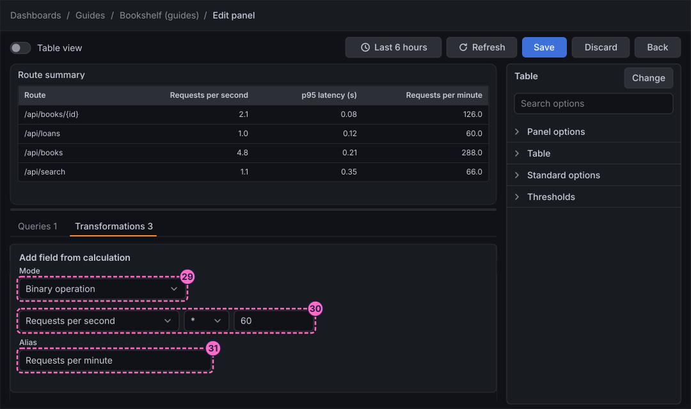
-
Add the transformation Filter data by values.
-
Add a condition and choose the field
Requests per second. -
Choose the operator Greater.
-
Type
1.05as the value. The route/api/loans, which gets about one request per second, leaves the table.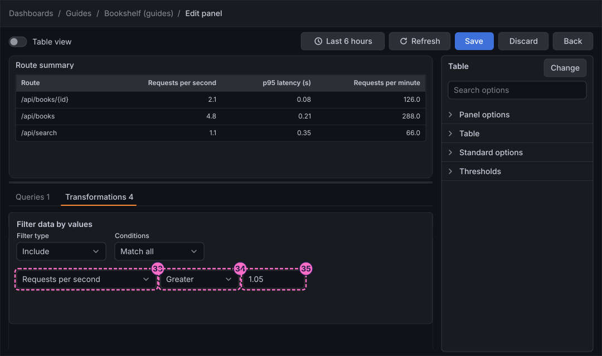
-
Click the debug icon in the header of the Filter data by values card. The card shows the data that goes in and the data that comes out, side by side. Click the icon again to close the view.
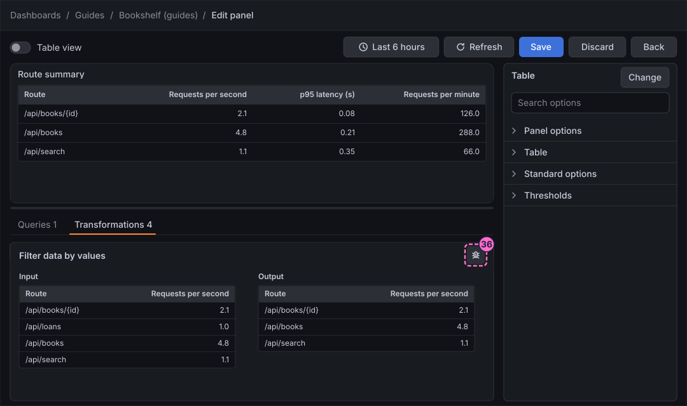
Summarise with Group by and Reduce
In this lab every route appears once, so Group by only renames the columns here; it matters when a query returns several rows for a route, for example when you add status to the sum by clause.
-
Add the transformation Group by.
-
Set the field
Routeto Group by. -
Set the field
Requests per secondto Calculate. -
Choose the calculation Total for it.
-
Set
Requests per minuteto Calculate with Total, andp95 latency (s)to Calculate with Max.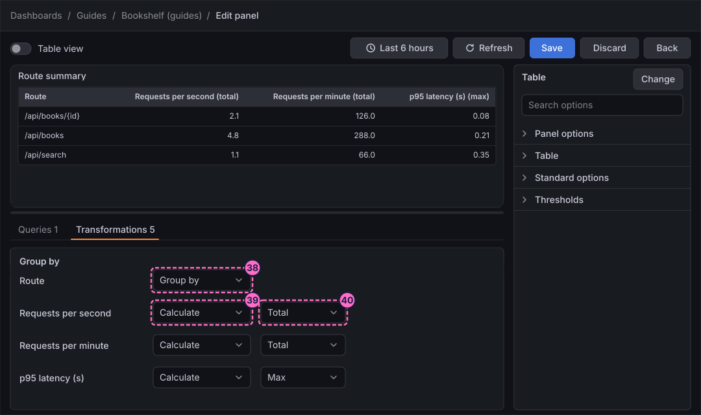
-
Add the transformation Reduce.
-
Set Mode to Reduce fields.
-
In Calculations, choose Max. The table shrinks to one row.
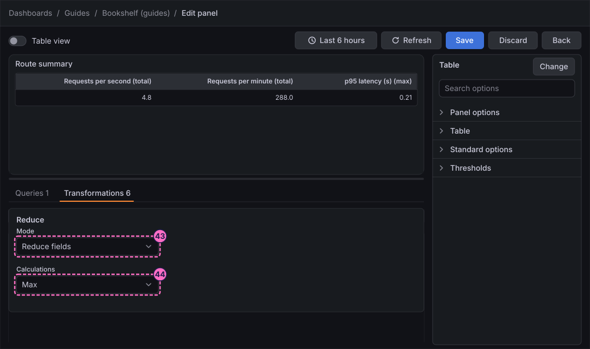
Use expressions in a time series panel
Expressions calculate on time series, so the second panel uses a range query.
-
Click Back in the header of the editor. The panel stays on the dashboard, which is still in edit mode.
-
Add another panel and open its editor, as in steps 3 to 5.
-
In query A, click Code.
-
Click inside the editor and type the request rate by status:
sum by (status) (rate(http_server_requests_seconds_count{application="bookshelf"}[1m])) -
Click Run queries.
-
Under Suggestions, click Time series.
-
Click Expression below the queries and choose Math.
-
In the expression, type:
$A * 60 -
Click Expression again and choose Reduce.
-
Set Function to Last.
-
Set Input to
A. -
Set Mode to Drop Non-numeric Values.
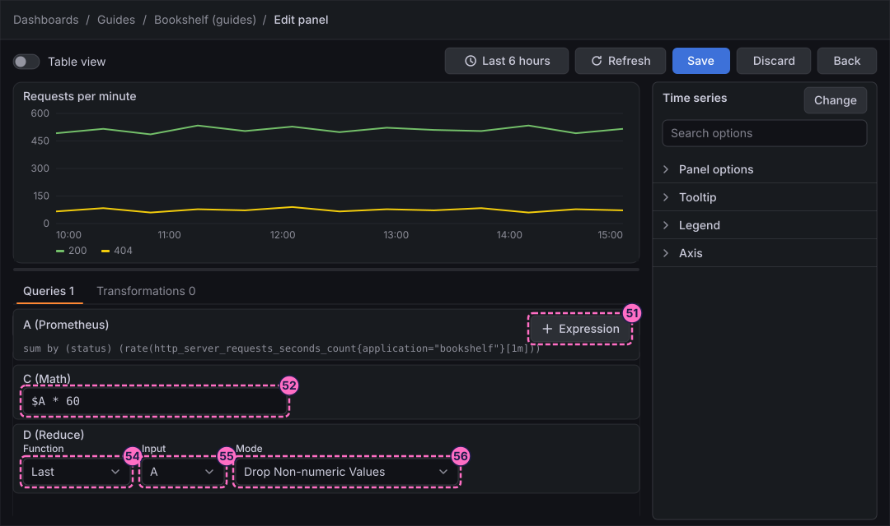
-
Click Expression a third time and choose SQL.
-
In the editor of the SQL expression, type a statement that reads query
Aas a table namedA:SELECT * FROM A LIMIT 5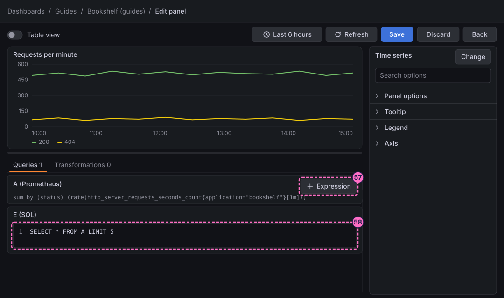
-
In the options pane, under Panel options, type
Requests per minutein Title. -
Click Save in the header of the editor.
-
In the Save dashboard drawer, click Save.
-
Click Back.
-
Click Exit edit.
-
If Grafana 13.3.0 shows the dialog Unsaved changes, click Save, and click Save again in the drawer that opens.
Check the result
Open Dashboards → Guides → Bookshelf (guides). The table Route summary shows one row with the highest request rate, the highest rate per minute (60 times the rate) and the highest p95 latency of the routes that get more than one request per second. The time series Requests per minute draws the status codes 200 and 404 at 60 times the per-second rate.
To see the table react, make the Bookshelf service slow, wait a minute and press Refresh; the maximum of p95 latency (s) grows:
curl -X POST localhost:8090/mode/slowRestore normal traffic afterwards:
curl -X POST localhost:8090/mode/normalTo inspect the results of the Reduce and SQL expressions, open the panel Requests per minute in the editor and switch on Table view in its header.
Variations
-
Disable a transformation temporarily instead of deleting it, to see how the table looked before it, or open the debug view of any card.
-
Replace Filter data by values with Sort by or Limit to keep only the busiest routes.
-
Use the expressions Resample and Threshold, which the alerting guides need, in the same way: click Expression and choose the type.
What can go wrong
| Symptom | Cause | Fix |
|---|---|---|
The join gives an empty table or a single query’s columns |
One query still has the format Time series, or a query was not run again after the change. |
Set Format to Table and Type to Instant in both queries and click Run queries. |
The latency column is empty |
The query for p95 has no data because the one-minute window of |
Keep the range |
The rename in Organize fields by name does not show |
The rename field was typed for a field that a join or another card renamed. |
Check the debug view of the previous card for the field names it passes on. |
The Math expression returns no data |
The query A of this panel is hidden or formatted as a table. |
Use the range query of step 48 with the default Time series format and click Run queries. |
The SQL expression reports an error |
The table name does not match the query’s reference id. |
Name the query in the |
Clean up
Keep the panels if you want to try the variations. To remove a panel, open the dashboard in edit mode, select it, click Delete in the Panel pane of the right sidebar and save the dashboard. The later guides in this series do not depend on them.
Where to go next
-
Previous guide: Thresholds, value mappings, overrides and data links.
-
Next guide: Variables, filters and repeats, which makes the same panels follow a selection.
-
Reference: Transformations and Expressions lists every transformation and expression type.